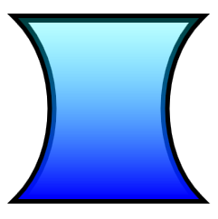

Direct2D provides the ID2D1PathGeometry interface for describing complex shapes that can contain curves, arcs, and lines. This topic describes how to define and render a path geometry.
To define a path geometry, first use the ID2D1Factory::CreatePathGeometry method to create the path geometry, then use the path geometry's Open method to retrieve an ID2D1GeometrySink. You can then add lines, curves, and arcs by calling the sink's various Add methods.
The following example creates an ID2D1PathGeometry, retrieves a sink, and uses it to define an hourglass shape.
ID2D1GeometrySink *pSink = NULL;
// Create a path geometry.
if (SUCCEEDED(hr))
{
hr = m_pD2DFactory->CreatePathGeometry(&m_pPathGeometry);
if (SUCCEEDED(hr))
{
// Write to the path geometry using the geometry sink.
hr = m_pPathGeometry->Open(&pSink);
if (SUCCEEDED(hr))
{
pSink->BeginFigure(
D2D1::Point2F(0, 0),
D2D1_FIGURE_BEGIN_FILLED
);
pSink->AddLine(D2D1::Point2F(200, 0));
pSink->AddBezier(
D2D1::BezierSegment(
D2D1::Point2F(150, 50),
D2D1::Point2F(150, 150),
D2D1::Point2F(200, 200))
);
pSink->AddLine(D2D1::Point2F(0, 200));
pSink->AddBezier(
D2D1::BezierSegment(
D2D1::Point2F(50, 150),
D2D1::Point2F(50, 50),
D2D1::Point2F(0, 0))
);
pSink->EndFigure(D2D1_FIGURE_END_CLOSED);
hr = pSink->Close();
}
SafeRelease(&pSink);
}
}
Note that an ID2D1PathGeometry is a device-independent resource and can, therefore, be created once and retained for the life of the application. (For more information about different types of resources, see the Resources Overview.)
The next example creates two brushes that will be used to paint the path geometry's outline and fill.
if (SUCCEEDED(hr))
{
// Create a black brush.
hr = m_pRenderTarget->CreateSolidColorBrush(
D2D1::ColorF(D2D1::ColorF::Black),
&m_pBlackBrush
);
}
if (SUCCEEDED(hr))
{
// Create a linear gradient.
static const D2D1_GRADIENT_STOP stops[] =
{
{ 0.f, { 0.f, 1.f, 1.f, 0.25f } },
{ 1.f, { 0.f, 0.f, 1.f, 1.f } },
};
hr = m_pRenderTarget->CreateGradientStopCollection(
stops,
ARRAYSIZE(stops),
&pGradientStops
);
if (SUCCEEDED(hr))
{
hr = m_pRenderTarget->CreateLinearGradientBrush(
D2D1::LinearGradientBrushProperties(
D2D1::Point2F(100, 0),
D2D1::Point2F(100, 200)),
D2D1::BrushProperties(),
pGradientStops,
&m_pLGBrush
);
}
SafeRelease(&pGradientStops);
}
The final example uses the DrawGeometry and FillGeometry methods to paint the geometry's outline and interior. This example produces the output shown in the following illustration.

void DemoApp::RenderGeometryExample()
{
// Translate subsequent drawings by 20 device-independent pixels.
m_pRenderTarget->SetTransform(
D2D1::Matrix3x2F::Translation(20.f, 20.f)
);
// Draw the hour glass geometry at the upper left corner of the client area.
m_pRenderTarget->DrawGeometry(m_pPathGeometry, m_pBlackBrush, 10.f);
m_pRenderTarget->FillGeometry(m_pPathGeometry, m_pLGBrush);
}
Code has been omitted from this example. For more information about geometries, see the Geometries Overview.